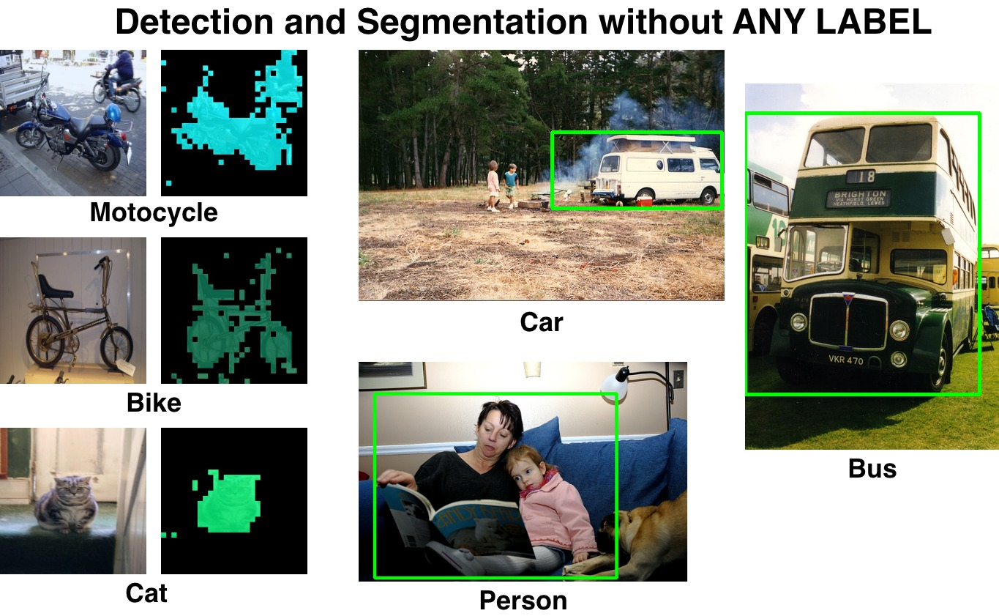
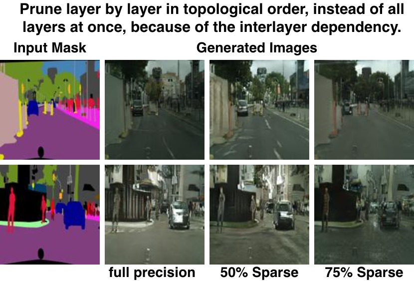
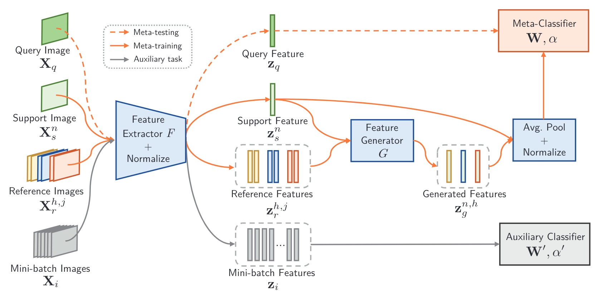

I am a third-year PhD student in Computer Science at Rutgers University, advised
by Prof. Abdeslam Boularias.
Before joining Rutgers, I worked at Microsoft and Megvii (Face++) as a software
engineer.
Previously, I earned a Master's at University of California San Diego (UCSD),
advised by Prof. Ken Kreutz-Delgado.
I earned a Bachelor at University of Science and Technology of China (USTC).
I am a third-year PhD student at Rutgers University. During my PhD, I have
published five first-author papers in top-tier robotics and AI conferences,
including RSS, RA-L, CoRL, and IROS. These works have received hundreds of stars
at GitHub. I have a strong foundation in 2D/3D computer vision, representation
learning, vision-language models, and policy learning for intelligent agents.
Motion Blender Gaussian Splatting for Dynamic Scene Reconstruction
Autoregressive Action Sequence Learning for Robotic Manipulation
Xinyu Zhang, Yuhan Liu, Haonan Chang, Liam Schramm, Abdeslam
Boularias
IEEE Robotics and Automation Letters (RA-L) 2025
PDF
•
Code & Video
Robot actions as a language, but robot actions are heterogeneous and
often continuous.
We propose chunking causal transformer to adapt autoregressive models
for robot actions
A universal architecture that establishes new state of the art in
Push-T, ALOHA, and RLBench.
Detect Everything with Few Examples
Xinyu Zhang, Yuhan Liu, Yuting Wang, Abdeslam Boularias
Conference on Robot Learning (CoRL) 2024
PDF
•
Code
•
Website
Existing work mix representation learning with detection
We don't learn representation, but focus on how to use existing
pretrained ones
Detect by propagating ROI regions in attention map
Scaling Manipulation Learning with Visual Kinematic Chain Prediction
Xinyu Zhang, Yuhan Liu, Haonan Chang, Abdeslam Boularias
Conference on Robot Learning (CoRL) 2024
PDF
•
Code
•
Website
How to learn a single policy for diverse environments?
Use a universal, visually grounded, analytically determined action
space!
That is, the visual projection of the robot kinematic structure
One-Shot Imitation Learning with Invariance Matching for Robotic
Manipulation
Xinyu Zhang, Abdeslam Boularias
Robotics: Science and Systems (RSS) 2024
PDF
•
Code
•
Website
Bind 3D spatial regions to robot actions, so actions have semantics!
Learn to discover these "key regions" and match regions between
demonstrations
Through region matching, we transfer robot actions to new scenes in
one-shot.
Diffusion-based Affordance Prediction for Multi-modality Storage
Haonan Chang, Kowndinya Boyalakuntla, Yuhan Liu, Xinyu Zhang,
Liam Schramm, Abdeslam Boularias
International Conference on Intelligent Robots and Systems (IROS) 2024
PDF
•
Code

Optical Flow boosts Unsupervised Localization and Segmentation
Xinyu Zhang, Abdeslam Boularias
International Conference on Intelligent Robots and Systems (IROS) 2023
PDF
•
Code
Make DINO features more object-aware
By using optical flow as regularization, i.e., similar local flow yields
similar local features

Learning Low-Precision Structured Subnetworks Using Joint Layerwise
Channel Pruning and Uniform Quantization
Xinyu Zhang, Ian Colbert, Srinjoy Das
MDPI Journal Apply Science 2022
PDF
•
Code
Prune layers in topological orders, instead of all at once
Because the neuron importance heavily depends on the sparsity of
previous layers.

Diversity transfer network for few-shot learning
Mengting Chen, Yuxin Fang, Xinggang Wang, Heng Luo, Yifeng Geng, Xinyu
Zhang, Chang Huang, Wenyu Liu, Bo Wang
AAAI Conference on Artificial Intelligence 2020
PDF
•
Code